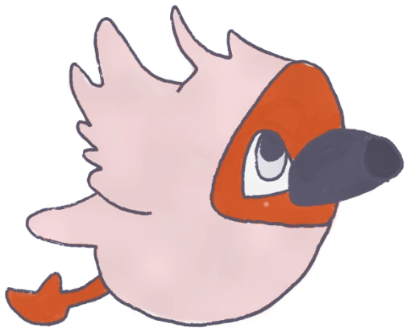

付き添いの保護者の方、まだ小さいきょうだいへ。
待っているだけなんて、もったいない2日間です。
ここほかの「市民」になれるのは、小1〜中3の子どもだけ。それ以外の方は、このまちに遊びに来た観光客＝ビジターとして参加できます。
まちの銀行で日本円をまちのお金に両替すれば、買いものも、遊びもたのしめます。こども大学や無料コンテンツにも参加できます。子どもたちがつくったまちを、お客さんとしてまるごと味わってください。
ビジターも、事前のお申し込みが必要です。当日はまちの市役所へ来ていただくと、「ビジター」と書かれた名札をお渡しします。首から下げたら、もうこのまちのお客さんです。
つぎは銀行へ。日本円を、ここほかのお金「ココ」に両替してください。ゲームやワークショップは、ココで買える「プレイチケット」で参加できます。
両替は「1ココ（500円）」からです。
ゲームやワークショップの「プレイチケット」は、まちの中でココを使って買います。
※レート・両替の単位は変更になる場合があります（確定しだい、ここでお知らせします）
両替がすんだら、あとは自由。まちをぐるっと歩いてみてください。
まちには、子どもたちが働くお店がならびます。地元の飲食店やこどもが企画したお店も出店。ココで、子どもの接客を受けてみてください。
出店するお店は、決まりしだいInstagramでお知らせします。
ワークショップに紙しばい、おもしろい大人がおもしろいことを教えてくれる「こども大学」。ビジターも参加できるものがあります。大人だけで語り合う対話会もひらかれます。
ことしのあそび・まなびを見る → これまでの催しを見る →※未就学のお子さんは、保護者の方といっしょにビジターとして楽しめます。小さな手で、はじめてのお買いものデビューもいいかもしれません。
ここほかでは、子どもが自分で考えて、自分で決めます。どのお仕事をするか、お給料を何に使うか、だれと過ごすか。その全部が、このまちでいちばん大事な体験です。
だから大人のみなさんに、ひとつだけおねがいがあります。
どうか口出し・手出しをしないでいてください。
迷っている時間も、決められない時間も、子どもにとっては大切な仕事の時間です。答えを先に渡さないでいてください。こどもには、自分で考え、決める権利があります。
お給料を使いきってしまっても、お仕事がうまくいかなくても大丈夫。「やってみて、うまくいかなかった」は、このまちでいちばん価値のあるおみやげです。こどもには、失敗する権利があります。
ずっと遊んでいても、途中で休んでいても大丈夫。こどもには、遊ぶ権利、休む権利があります。こまっている子には、見守り役のボランティアがそっと声をかけます。だから安心して、お客さんでいてください。
じつはこの3つのおねがいは、このまちをつくった子どもたちが決めた「8つのやくそく」からきています。
ここほかには「セーフガーディング指針」があります。まちに来る大人のみなさんにも、当日までに目を通していただけると安心です。いやな思いをしたときに、どこへ相談すればいいかも書いてあります。
セーフガーディング指針を読む →このまちには、こどもの警察がいます。
やくそくを破った大人は、本当に逮捕されます。
つかまったら、どうぞ素直に。
それも、このまちの楽しみかたのひとつです。

2026年11月21日（土）・22日（日）／新潟・古町7番町
ビジターとして申し込む ▶※大人・未就学児のかた向けの登録フォームです。締め切りは11月18日（水）。過ぎてしまっても当日受付できます。
当日は、まちの市役所で名札をお受け取りください。